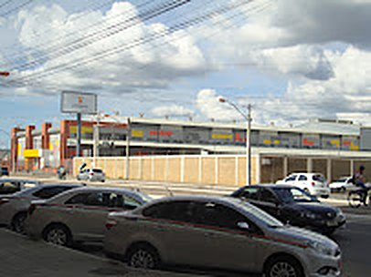

AnhangueraFaculdade Anhanguera
- Endereço
- Avenida Juracy Magalhães, número 3000, no bairro Boa Vista.
- Fundação
- 2018, em Vitória da Conquista.
- Cursos
- Enfermagem, Fisioterapia, Engenharia Civil, Administração, Psicologia e Ciências Contábeis.